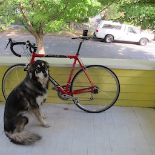
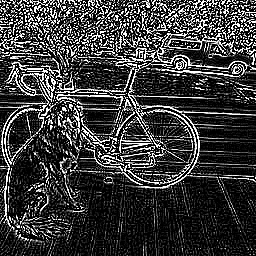
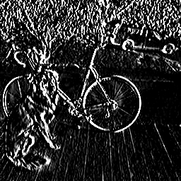

Say we want to run our neural networks on image data. We know that in image processing, feature extraction is very important to make machine learning models work well.
One standard technique for extracting features is the histogram of oriented gradients (HOG) method. You don’t have to worry too much about how HOG works, it’s basically just looking at patches in the input image and measuring which way the gradients (edges) face in those patches. The important part is the dimensions of HOG features. HOG features produce a 36-element vector for each \(8 \x 8\) patch in the input.
Say we want to learn feature extraction using neural networks instead. If we want to mimic HOG features our network might look like:
Since fully connected layers are fully connected there are 7.2 billion connections between the input and hidden layer!
During feature extraction, our network is looking at the entire image every time it computes a single feature. However, HOG features (and most image features) are meant to capture local information, like what edges are present nearby. We don’t need to look at the whole image for this.
For most feature extraction on images we can impose the assumption that pixels that are far apart are statistically independent. This means we only need to look at smaller, local regions when performing feature extraction.
Convolutions are a powerful tool for local feature extraction in a signal. The convolution operation takes two functions and slides one along the other, performing a dot product of their intersection to form an output signal. Note: in computer vision we talk about convolutions but in the signal processing domain what we’re actually talking about is a cross-correlation. I’m not going to try to correct a decade of mistaken terminology in this class so I’m just going to call it a convolution idk sorry…
Anyway, it’s nice to start with a 1-D example. We’ll be talking about discrete functions which we can just think of as vectors. We’ll define the convolution operator as follows:
\[(m * f)(x) = m_{[x-1, x+1]} \cdot f\]Take discrete functions \(m\) and \(f\). To convolve these filters we simply slide the filter \(f\) along input signal (or function) \(m\) and take weighted sums, storing the result in a new vector.
So the output is the vector:
\[m*f = [0 , 0 , 2 , -4 , 2 , 0 , 0 , -5 , 10 , -5 , 0 , 5 , -10]\]This particular filter, \(f = [-1, 2, -1]\), is a high-pass filter. It doesn’t respond to slow changes in the function but does respond to fast changes. The results is an output signal centered around zero that oscillates up and down when the input signal quickly moves up or down.
Notice that our input signal \(m\) has 15 elements but our output \(m*f\) only has 13 elements. We can’t apply the filter outside the bounds of our original function \(m\) so our output signal \(m*f\) with have size \(\vert m\vert - \lfloor\frac{\vert f \vert}{2}\rfloor\), in this case \(15 - 2 = 13\). Often it is helpful to have your input and output be the same size (like when processing data with neural networks!) so you may want to pad your input with data to make the output end up the same size. Consider using:
Most of the time zero-padding is a good option but you can try other versions too.
Another useful filter to know is \(f = [0.\overline{3}, 0.\overline{3}, 0.\overline{3}]\) or \(f = [0.2, 0.2, 0.2, 0.2, 0.2]\) or in general \(f = \frac{1}{n}[1,1,1,\dots,1]\). This is a low-pass filter or blurring filter, the output at every pixel is an average of a local window in the input signal.
Convolutional filters are powerful feature extractors in 2D. Here’s an example of high-pass and low-pass filters (or box filter) in two dimensions:
\[\text{High-Pass Filter} = \begin{bmatrix} -1 & -1 & -1 \\ -1 & 8 & -1 \\ -1 & -1 & -1 \\ \end{bmatrix}\] \[\text{Low-Pass "Box" Filter} = \frac{1}{9}\begin{bmatrix} 1 & 1 & 1 \\ 1 & 1 & 1 \\ 1 & 1 & 1 \\ \end{bmatrix}\] \(*\begin{bmatrix} -1 & -1 & -1 \\ -1 & 8 & -1 \\ -1 & -1 & -1 \\ \end{bmatrix} =\) 
\(* \frac{1}{9}\begin{bmatrix}
1 & 1 & 1 \\
1 & 1 & 1 \\
1 & 1 & 1 \\
\end{bmatrix} =\)
Sobel filters are convolutional filters designed to take the (approximate) derivative of an image in the x and y dimension.
\[G_x = \begin{bmatrix} -1 & 0 & 1 \\ -2 & 0 & 2 \\ -1 & 0 & 1 \\ \end{bmatrix}\] \[G_y = \begin{bmatrix} -1 & -2 & -1 \\ 0 & 0 & 0 \\ 1 & 2 & 1 \\ \end{bmatrix}\]Using these filters we can do things like find high rates of change in the x-dimension (vertical lines), y-dimension (horizontal lines), or calculate the magnitude and direction of all gradients (lines) in the image.
\(* \begin{bmatrix} -1 & 0 & 1 \\ -2 & 0 & 2 \\ -1 & 0 & 1 \\ \end{bmatrix} =\) 
\(* \begin{bmatrix}
-1 & -2 & -1 \\
0 & 0 & 0 \\
1 & 2 & 1 \\
\end{bmatrix} =\)

\(\arctan(\frac{dy}{dx}) =\)
Convolutional filters respond strongly to patches in an image that have a similar structure. For instance, our Sobel Filter \(G_x\) will respond strongly to vertical lines or gradients that increase from left to right. It will also respond strongly (with high magnitude but negative value) to gradients that decrease from left to right. It won’t respond at all to constant values, gradients in vertical axis, or vertical lines. This intuition can be helpful when understanding what a filter will respond to.
Images are typically 3 channel with RGB components and feature maps can have many channels. Convolutional filters usually have the same number of channels as the input signal they are run on. The weighted sum happens in a local pixel neighborhood across all channels of the image. For example, here is a filter that responds to vertical edges in the red channel, horizontal edges in the green channel, and ignores the blue channel.
\[f = \begin{bmatrix} \begin{bmatrix} -1 & 0 & 1 \\ -2 & 0 & 2 \\ -1 & 0 & 1 \\ \end{bmatrix} & \begin{bmatrix} -1 & -2 & -1 \\ 0 & 0 & 0 \\ 1 & 2 & 1 \\ \end{bmatrix} & \begin{bmatrix} 0 & 0 & 0 \\ 0 & 0 & 0 \\ 0 & 0 & 0 \\ \end{bmatrix}\end{bmatrix}\]Hopefully you are now convinced that convolutional filters are effective at extracting useful information from local patches in signal data (such as images). Though they are powerful feature extractors, they are relatively simple, we are just doing a weighted sum of the input with a filter.
Convolutions, especially filters like sobel filters, were commonly used as a first step in feature extraction before deep neural networks. The features they found would be aggregated in local areas to produce descriptors like HOG features.
But now we want to bake feature extraction into our neural network. Fully connected layers were too dense but convolutions are spare operations (each pixel in the output is only connected to a local neighborhood in the input) and are computationally fairly cheap (like connected layers we are just doing a weighted sum to compute convolutions).
So instead of using pre-defined convolutional filters we can implement neural network layers that perform convolution operations. The weights in these layers can be updated via error backpropagation so we learn filters that work well for the particular task.
Notationally I will use \([128 \mid 3 \times 3 \text{ s } 2]\) to denote a convolutional layer with 128 filters, size \(3 \times 3\) applied with a stride of 2.
Each filter processes the input image or feature map and produces a single channel for the output feature map. More filters mean the layer can specialize and extract more specific features. However it also means the layer take longer to process.
In general you need fewer features in the early layers because there aren’t very many interesting features to look for. For instance in the first layer there are only so many orientations of edges and color blobs to look for. Adding more filters can just lead to redundancy without being productive.
Later layers tend to have more filters as the spatial dimensions of the image shrinks. There’s less information in the spatial dimension but more semantic information and more channels to process and look for patterns in.
Larger filters can process more information in the spatial dimensions but take longer to process. Smaller filters are faster. In general filters are square and usually have odd parity in size. Only a few filters are commonly used although there is room to explore other options. The common ones are:
It’s important to note that aside from the spatial dimension filters have a number of channels. This number of channels is usually equal to the number of channels in the input and every filter processes information from each channel in the input. However, grouped convolutions split the input into smaller subsets of channels and each filter only processes a subset of the channels.
Typically convolutional filters are applied at every pixel location, by striding the filter 1 pixel to the left across the image, then back to the beginning and 1 pixel down, etc. By using a stride of 2 pixels or more convolutional filters downsample the image by a factor equal to the stride. A convolution with a stride of two will (usually) create an output feature map with half the width and half the height of the input.
The most common stride values are 1 and 2, larger strides are very seldom used in image processing (but may be more common in other domains).
On the forward pass of a convolutional layer the input feature map \(x\) is convolved with each filter. Usually each filter has the same number of channels as the input so each application of the filter performs a weighted sum over some patch in the image across all channels.
Each filter also has a constant bias term that is added in to the output. The same bias is added regardless of the location of filter application so this is equivalent to adding a constant amount to each channel of the image (although each filter and thus each channel in the output has a separate bias term). This image (or often batch of images) is return as \(y\).
On the backward pass the convolutional layer calculates \(\frac{dL}{dx}\) from \(\frac{dL}{dy}\) to pass back to the previous layer. This is done through what is sometimes referred to as a deconvolution, each pixel in the error term \(\frac{dL}{dy}\) is multiplied by elements in the weight matrix and projected backward into an image of the same size as the original input. In practice we will do this with matrix operations, it’s just as confusing but at least it’s sligthly easier to implement and it’s quite fast. See below for details.
The backward pass also calculates \(\frac{dL}{df}\) and \(\frac{dL}{db}\). Similar to connected layers, \(\frac{dL}{db}\) is calculated by aggregating the error terms over elements in a batch but also over spatial locations in the same channel (since one bias is used for the entire filter/channel). \(\frac{dL}{df}\) is calculated by multiplying the appropriate input pixel in \(x\) by term in \(\frac{dL}{dy}\) and aggregating across multiple filter applications (since the same weight in a filter connects multiple inputs to outputs).
For the weight update we’ll use the same update process as connected layer. For SGD with momentum and decay our weight update is:
\[\begin{align}\Delta_t &= \frac{dL}{df} + \lambda f + m \Delta_{t-1}\\ f &= f - \eta \Delta_t \end{align}\]There are a few things to consider when implementing convolutional layers. Where will you start the filter application? Do you pad the input or have a smaller size output than input (as we saw in the 1D example)? How do you handle ambiguities related to strided convolutions and downsampling? How do you make your implementation efficient?
In general (I think) it’s good to have convolutional layers produce output feature maps that are the same size as the input. For convolutions that aren’t \(1 \times 1\) this means padding the input.
When considering strided convolutions there are edge cases that arise when the input dimension is not divisible by the stride, for example applying a \(3 \times 3 \text{ s } 2\) filter to a \(5 \times 5\) image. In this case, our output could either be \(3 \times 3\) or \(2 \times 2\). In 1D if we are convolving filter \(f = [f_0, f_1, f_2]\) with signal \(x = [x_0, x_1, x_2, x_3, x_4]\) we could either decide to pad the input with zeros and apply the convolution 3 times or not pad the input and only apply the convolution twice:
With zero padding we can apply the filter three times as shown below:
| 0 | \(x_0\) | \(x_1\) | \(x_2\) | \(x_3\) | \(x_4\) | 0 |
| \(f_0\) | \(f_1\) | \(f_2\) | ||||
| \(f_0\) | \(f_1\) | \(f_2\) | ||||
| \(f_0\) | \(f_1\) | \(f_2\) |
Output: \(x * f = [0f_0 + x_0f_1 + x_1f_2,\quad x_1f_0 + x_2f_1 + x_3f_2,\quad x_3f_0 + x_4f_1 + 0f_2]\).
Without zero padding we only look at pixels internal to the image but we shrink the output by more than the stride of the convolution
| \(x_0\) | \(x_1\) | \(x_2\) | \(x_3\) | \(x_4\) |
| \(f_0\) | \(f_1\) | \(f_2\) | ||
| \(f_0\) | \(f_1\) | \(f_2\) |
Output: \(x * f = [x_0f_0 + x_1f_1 + x_2f_2,\quad x_2f_0 + x_3f_1 + x_4f_2]\).
Both of these approaches are equally valid and just make different tradeoffs.
If you use a convolutional filter of even size there can be ambiguity about where to pad the input. For example, if you want the output to be the same size as the input and are convolving a length 2 filter with length 5 input you can pad at either the beginning or end:
With zero padding at the start we can apply the filter four times as shown below:
| 0 | \(x_0\) | \(x_1\) | \(x_2\) | \(x_3\) | \(x_4\) |
| \(f_0\) | \(f_1\) | ||||
| \(f_0\) | \(f_1\) | ||||
| \(f_0\) | \(f_1\) | ||||
| \(f_0\) | \(f_1\) | ||||
| \(f_0\) | \(f_1\) |
Output: \(x * f = [0f_0 + x_0f_1,\quad x_0f_0 + x_1f_1,\quad x_1f_0 + x_2f_1,\quad x_2f_0 + x_3f_1,\quad x_3f_0 + x_4f_1]\).
With zero padding at the end we can apply the filter four times as shown below:
| \(x_0\) | \(x_1\) | \(x_2\) | \(x_3\) | \(x_4\) | 0 |
| \(f_0\) | \(f_1\) | ||||
| \(f_0\) | \(f_1\) | ||||
| \(f_0\) | \(f_1\) | ||||
| \(f_0\) | \(f_1\) | ||||
| \(f_0\) | \(f_1\) |
Output: \(x * f = [x_0f_0 + x_1f_1,\quad x_1f_0 + x_2f_1,\quad x_2f_0 + x_3f_1,\quad x_3f_0 + x_4f_1,\quad x_4f_0 + 0f_1]\).
To make convolutions fast we can implement them using matrix primitives. Assuming we have \(N\) filters of size \(S \times S\) running on an image of dimensions \(W \times H \times C\) with a stride \(T\), assuming the stride evenly divides the input dimensions, we will have:
The input image \(x\) is a single vector with image data in CHW format.
The filters \(f\) are stored in a matrix where every row is a separate filter and each filter is stored as if reading out the filter left-to-right, top-to-bottom, channel-by-channel (CHW format).
The column matrix \(m\) is a rearrangement of our input image where each column represents the input to one application of a convolutional filter. The number of rows is the number of elements in a filter \(C*S*S\) and the number of columns is the number of spatial locations that filters are applied in the image (i.e. the number of pixels in the output image).
The output image \(m\) is arranged in CHW format but for the output dimensions. It is an image with \(N\) channels, \(\frac{H}{T}\) height, and \(\frac{W}{T}\) width.
We can produce the output quite simply by multiplying the filters by the column matrix:
\[y = f m\]The tricky part then is creating and filling in the column matrix. Here’s a small example with an RGB image that is 4x3:
\[f = \begin{bmatrix} \begin{bmatrix} r_{0,0} & r_{0,1} & r_{0,2} & r_{0,3} \\ r_{1,0} & r_{1,1} & r_{1,2} & r_{1,3} \\ r_{2,0} & r_{2,1} & r_{2,2} & r_{2,3} \\ \end{bmatrix} & \begin{bmatrix} g_{0,0} & g_{0,1} & g_{0,2} & g_{0,3} \\ g_{1,0} & g_{1,1} & g_{1,2} & g_{1,3} \\ g_{2,0} & g_{2,1} & g_{2,2} & g_{2,3} \\ \end{bmatrix} & \begin{bmatrix} b_{0,0} & b_{0,1} & b_{0,2} & b_{0,3} \\ b_{1,0} & b_{1,1} & b_{1,2} & b_{1,3} \\ b_{2,0} & b_{2,1} & b_{2,2} & b_{2,3} \\ \end{bmatrix}\end{bmatrix}\] \[\text{col2im}(f, \text{size}=3, \text{stride}=1) = \begin{bmatrix} 0&0&0&0& 0 & r_{0,0} & r_{0,1} & r_{0,2} & 0 & r_{1,0} & r_{1,1} & r_{1,2} \\ 0&0&0&0&r_{0,0} & r_{0,1} & r_{0,2} & r_{0,3} & r_{1,0} & r_{1,1} & r_{1,2} & r_{1,3}\\ 0&0&0&0&r_{0,1} & r_{0,2} & r_{0,3} & 0 & r_{1,1} & r_{1,2} & r_{1,3} & 0 \\ 0 & r_{0,0} & r_{0,1} & r_{0,2} & 0 & r_{1,0} & r_{1,1} & r_{1,2} & 0 & r_{2,0} & r_{2,1} & r_{2,2}\\ r_{0,0} & r_{0,1} & r_{0,2} & r_{0,3} & r_{1,0} & r_{1,1} & r_{1,2} & r_{1,3} & r_{2,0} & r_{2,1} & r_{2,2} & r_{2,3}\\ r_{0,1} & r_{0,2} & r_{0,3} & 0 & r_{1,1} & r_{1,2} & r_{1,3} & 0 & r_{2,1} & r_{2,2} & r_{2,3} & 0 \\ 0 & r_{1,0} & r_{1,1} & r_{1,2} & 0 & r_{2,0} & r_{2,1} & r_{2,2}&0&0&0&0\\ r_{1,0} & r_{1,1} & r_{1,2} & r_{1,3} & r_{2,0} & r_{2,1} & r_{2,2} & r_{2,3}&0&0&0&0\\ r_{1,1} & r_{1,2} & r_{1,3} & 0 & r_{2,1} & r_{2,2} & r_{2,3} & 0 &0&0&0&0\\ 0&0&0&0& 0 & g_{0,0} & b_{0,1} & b_{0,2} & 0 & b_{1,0} & b_{1,1} & b_{1,2} \\ 0&0&0&0&g_{0,0} & b_{0,1} & b_{0,2} & b_{0,3} & b_{1,0} & b_{1,1} & b_{1,2} & b_{1,3}\\ 0&0&0&0&g_{0,1} & b_{0,2} & b_{0,3} & 0 & b_{1,1} & b_{1,2} & b_{1,3} & 0 \\ 0 & g_{0,0} & b_{0,1} & b_{0,2} & 0 & b_{1,0} & b_{1,1} & b_{1,2} & 0 & b_{2,0} & b_{2,1} & b_{2,2}\\ g_{0,0} & b_{0,1} & b_{0,2} & b_{0,3} & b_{1,0} & b_{1,1} & b_{1,2} & b_{1,3} & b_{2,0} & b_{2,1} & b_{2,2} & b_{2,3}\\ g_{0,1} & b_{0,2} & b_{0,3} & 0 & b_{1,1} & b_{1,2} & b_{1,3} & 0 & b_{2,1} & b_{2,2} & b_{2,3} & 0 \\ 0 & g_{1,0} & b_{1,1} & b_{1,2} & 0 & b_{2,0} & b_{2,1} & b_{2,2}&0&0&0&0\\ g_{1,0} & b_{1,1} & b_{1,2} & b_{1,3} & b_{2,0} & b_{2,1} & b_{2,2} & b_{2,3}&0&0&0&0\\ g_{1,1} & b_{1,2} & b_{1,3} & 0 & b_{2,1} & b_{2,2} & b_{2,3} & 0 &0&0&0&0\\ 0&0&0&0& 0 & b_{0,0} & b_{0,1} & b_{0,2} & 0 & b_{1,0} & b_{1,1} & b_{1,2} \\ 0&0&0&0&b_{0,0} & b_{0,1} & b_{0,2} & b_{0,3} & b_{1,0} & b_{1,1} & b_{1,2} & b_{1,3}\\ 0&0&0&0&b_{0,1} & b_{0,2} & b_{0,3} & 0 & b_{1,1} & b_{1,2} & b_{1,3} & 0 \\ 0 & b_{0,0} & b_{0,1} & b_{0,2} & 0 & b_{1,0} & b_{1,1} & b_{1,2} & 0 & b_{2,0} & b_{2,1} & b_{2,2}\\ b_{0,0} & b_{0,1} & b_{0,2} & b_{0,3} & b_{1,0} & b_{1,1} & b_{1,2} & b_{1,3} & b_{2,0} & b_{2,1} & b_{2,2} & b_{2,3}\\ b_{0,1} & b_{0,2} & b_{0,3} & 0 & b_{1,1} & b_{1,2} & b_{1,3} & 0 & b_{2,1} & b_{2,2} & b_{2,3} & 0 \\ 0 & b_{1,0} & b_{1,1} & b_{1,2} & 0 & b_{2,0} & b_{2,1} & b_{2,2}&0&0&0&0\\ b_{1,0} & b_{1,1} & b_{1,2} & b_{1,3} & b_{2,0} & b_{2,1} & b_{2,2} & b_{2,3}&0&0&0&0\\ b_{1,1} & b_{1,2} & b_{1,3} & 0 & b_{2,1} & b_{2,2} & b_{2,3} & 0 &0&0&0&0\\ \end{bmatrix}\] \[\text{col2im}(f, \text{size}=2, \text{stride}=2) = \begin{bmatrix} r_{0,0} & r_{0,2} & r_{2,0} & r_{2,2} \\ r_{0,1} & r_{0,3} & r_{2,1} & r_{2,3} \\ r_{1,0} & r_{1,2} & 0 & 0 \\ r_{1,1} & r_{1,3} & 0 & 0 \\ g_{0,0} & g_{0,2} & g_{2,0} & g_{2,2} \\ g_{0,1} & g_{0,3} & g_{2,1} & g_{2,3} \\ g_{1,0} & g_{1,2} & 0 & 0 \\ g_{1,1} & g_{1,3} & 0 & 0 \\ b_{0,0} & b_{0,2} & b_{2,0} & b_{2,2} \\ b_{0,1} & b_{0,3} & b_{2,1} & b_{2,3} \\ b_{1,0} & b_{1,2} & 0 & 0 \\ b_{1,1} & b_{1,3} & 0 & 0 \\ \end{bmatrix}\]For your homework I would like you to pad to keep the output the same spatial dimensions as the input for stride-1 convolutions and err on the side of making the output bigger when the stride doesn’t evenly divide the input dimensions. In general the output size, as given in the code, should be:
\[\text{out} = (\text{in} - 1) / \text{stride} + 1\]I would like you to start convolutions with the filter “centered” on the top-left pixel of the image. The center of an odd size filter is the center pixel while the center of an even size filter is the top-left of the four pixel square at the center. Here’s an example of a \(4 \times 4\) filter with the center marked with an “X”.
|o|o|o|o|
|o|X|o|o|
|o|o|o|o|
|o|o|o|o|
Images are big. After extracting features using one or more convolutional layers we often don’t need the full spatial resolution of the original image. One option is to use strided convolutions to downsample the image. However, one thing we may want is to aggregate over areas in the image by amplifying any signal present in an area. Maxpooling layers look at local neighborhoods in the input and set the output to be the maximum value. Each channel is processed separately so the output has the same number of channels as the input.
Starting at the first pixel look at a \(\text{size} \times \text{size}\) window centered at that pixel, set the output to be the maximum in that window. Slide the center of the window over by “stride” and repeat. Each channel is processed independently.
Using the saved input to the layer run the same process as above but instead of propagating forward backward propagate the partial derivatives \(\frac{dL}{dy}\) back to the index in \(\frac{dL}{dx}\) where the maximum value was in the original input \(x\).
Maxpooling layers are similar to convolutional layers in that you are processing local areas of the input. Similar to your im2col you should “pad” the input to maintain correct sizing (\(\text{in} = (\text{out} - 1)/\text{stride} + 1\)). Unlike convolutional layers you shouldn’t zero pad, some patches may all be negative and we want the maximum of the values in the image.